Qualité de l'air intérieur
La qualité de l'environnement intérieur (QEI) regroupe la qualité de l'air, le confort thermique, l'éclairage et l'acoustique. En bureau, on s'appuie sur le RSST (annexes III et IV), la norme ASHRAE 62.1 (ventilation) et ASHRAE 55 (confort thermique). Les symptômes typiques de mauvaise QAI incluent irritation, maux de tête et fatigue. En mine, ces enjeux concernent les bâtiments administratifs, les salles de contrôle et les dortoirs FIFO.
Table des matières
- Qualité de l'air intérieur
- Critères de référence
- Sources de contaminants
- Confort thermique
- Mesures et évaluation
- Mesures préventives
- Application terrain
- Ressources
Qualité de l'air intérieur
Les polluants se répartissent entre nature chimique (COV, CO2, formaldéhyde) et microbiologique (Bioaérosols).
Origines
- Air extérieur (infiltration, prises d'air).
- Activités des occupants.
- Matériaux, mobilier, plantes.
Symptômes typiques (CCHST)
- Irritation yeux, nez, gorge, peau.
- Maux de tête, fatigue, essoufflement.
- Hypersensibilité, allergies ; voir Sensibilisants respiratoires et cutanés.
- Congestion, toux, éternuements.
- Étourdissements, nausées.
Souvent, les symptômes apparaissent en milieu de journée et s'améliorent en fin de semaine ou en vacances. C'est un signal indirect en faveur d'une cause environnementale.
Critères de référence
RSST
| Art. | Disposition |
|---|---|
| 40 | O2 > 19,5 % |
| 41 | Respect annexe I (VEA et normes RSST) |
| 101 | Nécessité de ventilation |
| 103 | Changements d'air frais (annexe III) ; bureau : 2,4 L/s/pers air frais, 7,1 L/s/pers total |
| 104 | Inspection annuelle |
| 106 | Localisation des prises d'air |
| 113 | Évacuation directe des combustions |
| 119 | Humidité relative > 20 % |
Synthèse de l'annexe III.
{kind=link}
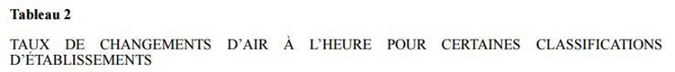
Toucher l'image pour l'agrandirNorme ASHRAE 62.1 (ventilation)
Calcul du débit d'air frais.
{kind=link}
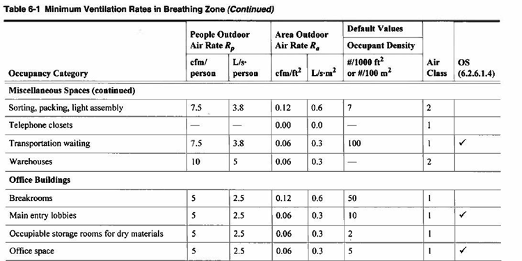
Toucher l'image pour l'agrandir$V_{bz} = R_p \times P_z + R_a \times A_z$ puis $V_{oz} = V_{bz} / E_z$.
- $R_p$ : débit air extérieur/personne (L/s/pers).
- $R_a$ : taux air extérieur/surface (L/s/m²).
- $E_z$ : facteur de configuration.
Tableau Rp et Ra.
{kind=link}
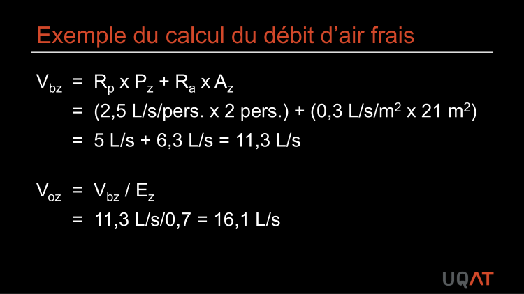
Toucher l'image pour l'agrandirFiltration : efficacité minimale MERV 8 sur les conduites d'évacuation.
{kind=link}
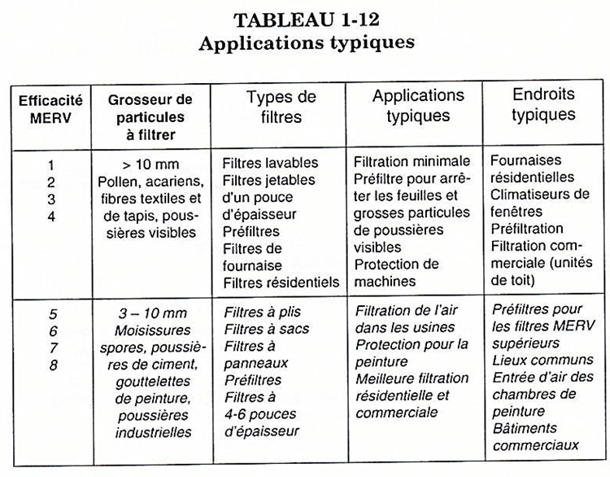
Toucher l'image pour l'agrandirLes prises d'air doivent être distantes des sources de contaminants.
{kind=link}
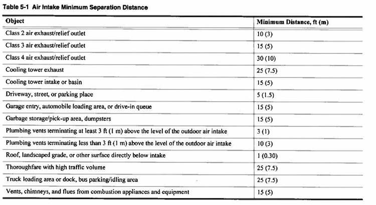
Toucher l'image pour l'agrandirNorme ASHRAE 55 (confort)
Paramètres : T° opérative, T° radiante, variation de T° (verticale, horizontale), vitesse de l'air, humidité relative, niveau d'activité (met), isolation des vêtements (clo). Voir aussi Contrainte thermique.
Les zones de confort thermique.
{kind=link}
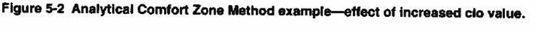
Toucher l'image pour l'agrandirCSA Z412-17
Lignes directrices ergonomiques pour les bureaux, plages acceptables T° et HR.
{kind=link}
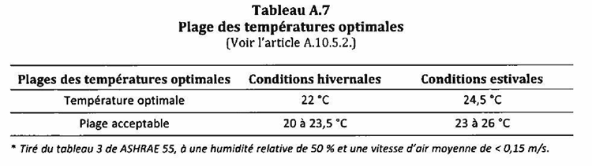
Toucher l'image pour l'agrandirSources de contaminants
D'origine interne
- Occupants (CO2, odeurs corporelles, Bioaérosols).
- Matériaux (COV des colles, peintures, panneaux).
- Équipements (imprimantes : ozone, poussières).
- Activités (entretien, alimentation).
{kind=link}
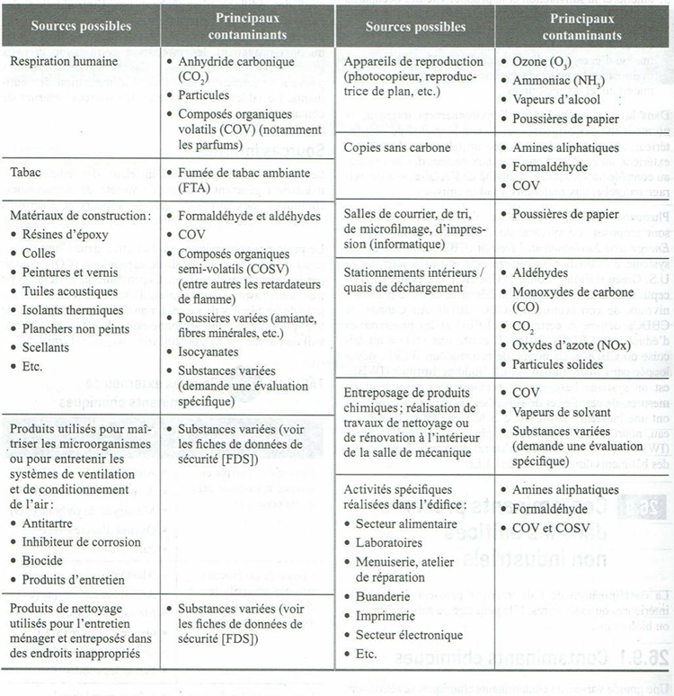
Toucher l'image pour l'agrandirD'origine externe
- Air extérieur, gaz d'échappement.
- Prises d'air mal positionnées.
- Émissions industrielles voisines.
{kind=link}
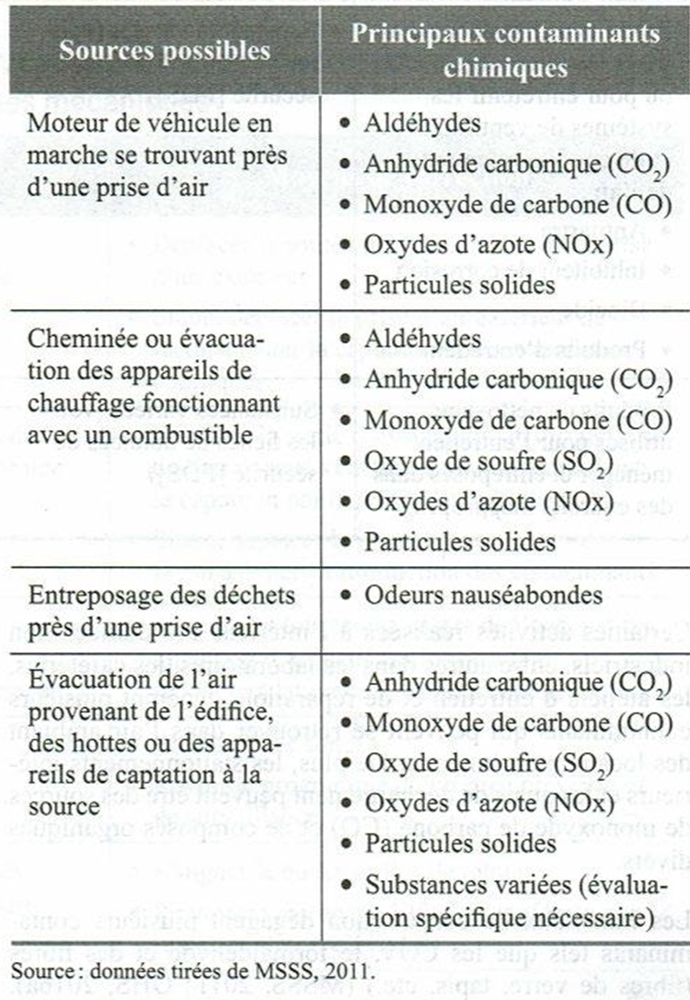
Toucher l'image pour l'agrandirConfort thermique
RSST annexe IV
- T° minimale : selon type d'activité.
- HR > 20 % (art. 119).
- LSST art. 51.4 (abrogé) : aération et chauffage convenables. Voir LSST.
CCHST
Confort thermique : entre 20 et 27 °C, HR 35-60 %.
Indicateurs principaux
- CO2 : indicateur indirect d'occupation et de ventilation. Critère ASHRAE : variation < 700 ppm vs extérieur (~1000 ppm absolu).
- Odeurs : corporelles ou contaminants spécifiques.
- Humidité relative : RSST > 20 %, CSA Z412-17 moyenne 50 %.
Mesures et évaluation
- Sondes de contact pour T°, HR.
- Mesure CO2 (lecture directe).
{kind=link}
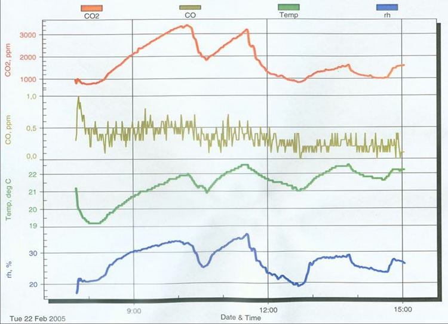
Toucher l'image pour l'agrandir- Sondes de vitesse d'air.
- Mesure des contaminants spécifiques (formaldéhyde, COV) si nécessaire.
{kind=link}
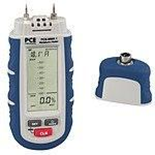
Toucher l'image pour l'agrandir- Calcul du débit d'air frais réel.
Mesures préventives
Suivre la Hiérarchie des moyens de prévention.
- Substitution : matériaux à faibles émissions COV.
- Ventilation : balance air frais, prises d'air bien placées.
- Entretien préventif des systèmes (filtres, conduits).
- Administratif : politique non-fumeurs, nettoyage, contrôle de l'humidité.
{kind=link}
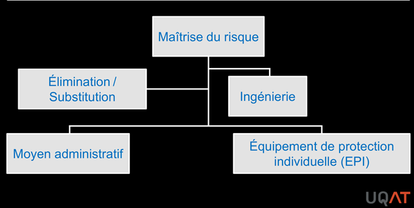
Toucher l'image pour l'agrandirApplication terrain
Lieux concernés en mine
| Lieu | Particularités QAI |
|---|---|
| Salles de contrôle (concentrateur, smelter) | Forte densité d'occupation, équipements électroniques, parfois proximité de procédés |
| Bureaux administratifs | Cas type ASHRAE 62.1/55 standard |
| Dortoirs FIFO et cafétérias | Densité élevée, ventilation collective, gestion des odeurs et bioaérosols |
| Salle à manger souterraine | Possibilité de Rayonnements ionisants et non ionisants, ventilation auxiliaire dédiée |
| Postes de garde, vestiaires | Humidité, contamination croisée avec linge de travail |
| Ateliers attenants à bureaux | Migration des contaminants ateliers vers bureaux |
Leviers spécifiques au secteur minier
- Conception des dortoirs FIFO selon ASHRAE 62.1 + acoustique pour repos diurne.
- Surveillance CO2 dans salles de contrôle (souvent occupées 24/7).
- Filtration enrichie (MERV 13+) dans bureaux situés à proximité d'aires diesel.
- Coordination QAI + bien-être en FIFO : la qualité du sommeil dépend en partie de la QEI. Voir aussi le wiki psychosociale frère : Milieu Minier et FIFO et Santé Mentale.
Ressources
| Document | Type | Source |
|---|---|---|
| ASHRAE 62.1 | Norme | ASHRAE |
| ASHRAE 55 | Norme | ASHRAE |
| CSA Z412-17 | Norme | CSA |
| Guide qualité air intérieur | Guide | INSPQ |
| RSST annexes III et IV | Règlement | LégisQuébec |
Articles wiki connexes
Pages qui pointent ici (18)
- 🎯 Démarrage rapide, conseiller SST Hygiène industrielle
- 🏠 Wiki Hygiène industrielle, mines Hygiène industrielle
- Agresseurs biologiques Hygiène industrielle
- Agresseurs physiques Hygiène industrielle
- art-119-RSST Ergonomie
- art-119-RSST Hygiène industrielle
- art-51-4-LSST Ergonomie
- art-51-4-LSST Hygiène industrielle
- art-51-LSST Hygiène industrielle
- Aspiration et dangers biologiques Hygiène industrielle
- Aspiration et dangers biologiques Toxicologie
- Bioaérosols Hygiène industrielle
- Contrainte thermique Hygiène industrielle
- Domaines de l'ergonomie Ergonomie
- Environnement de travail Hygiène industrielle
- Mobilier de bureau et santé SST psychosociale
- Prévention de la contrainte thermique en mine Hygiène industrielle
- Rayonnements ionisants et non ionisants Hygiène industrielle